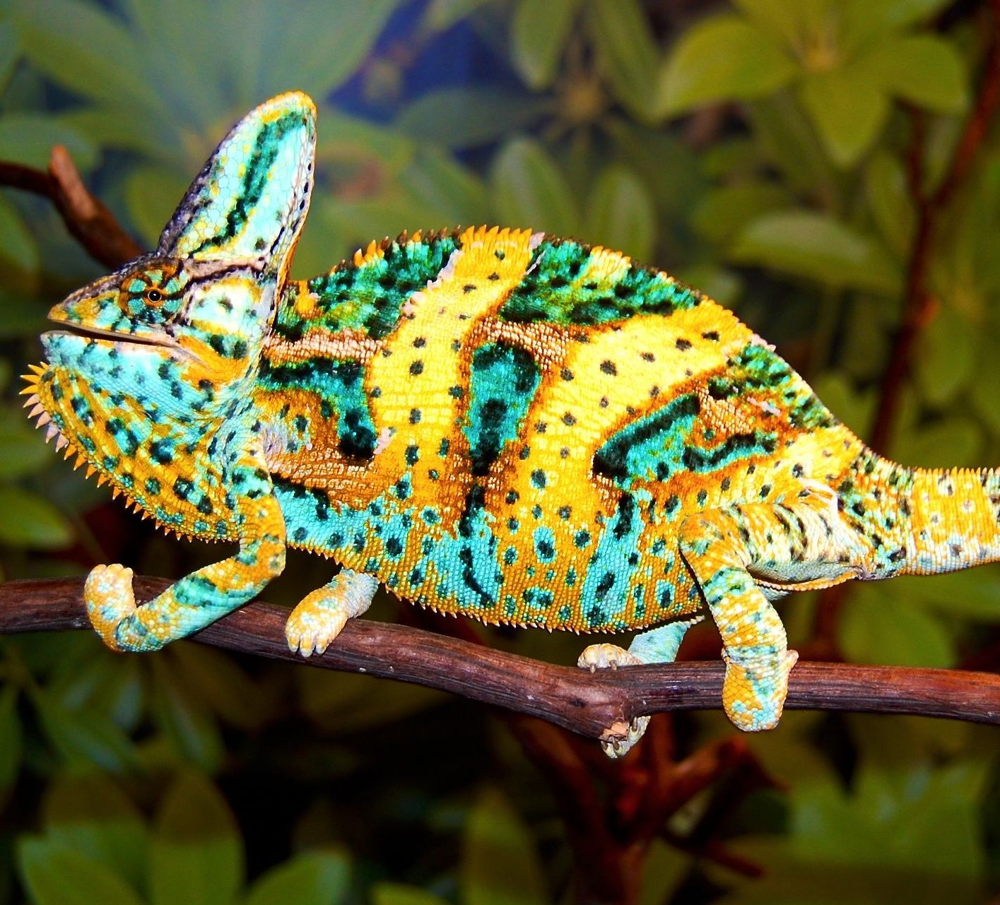
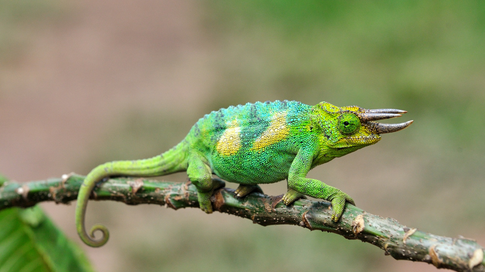
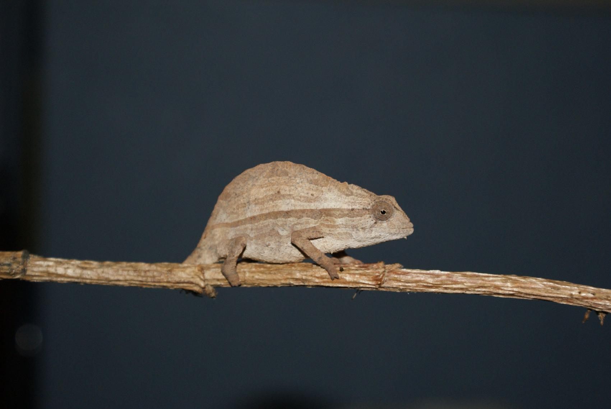
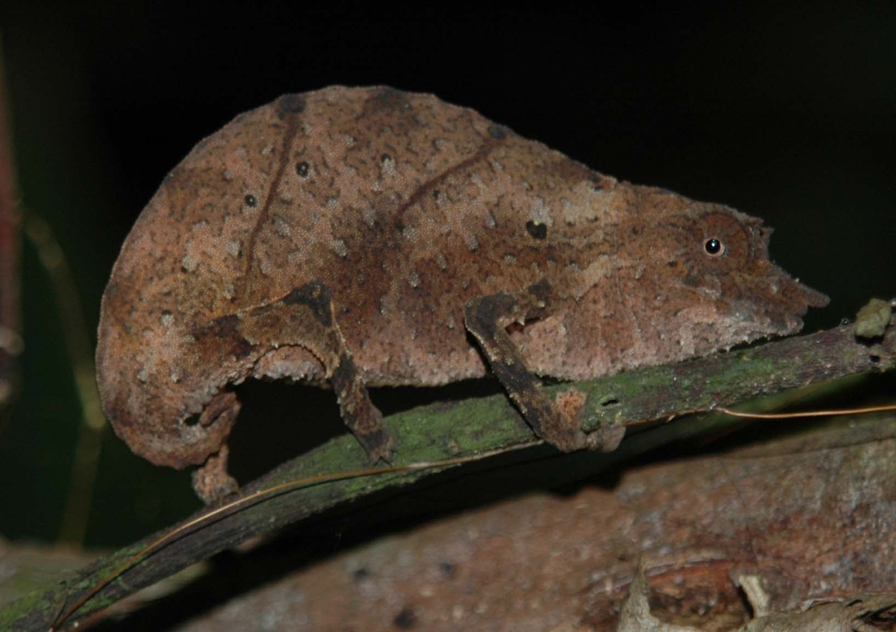
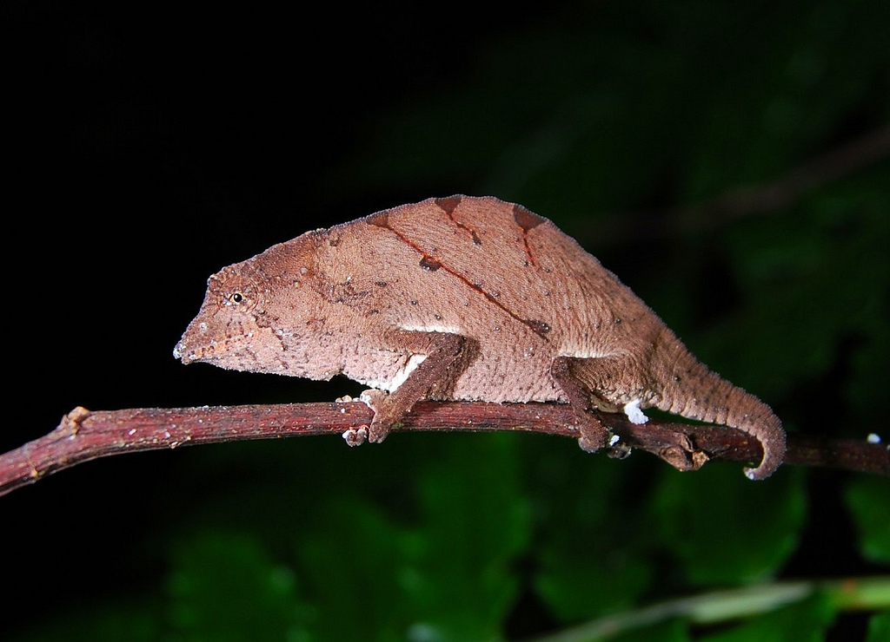

Description
Chameleons vary greatly in size and body structure, with maximum total lengths varying from 15 mm in male to 68.5 cm. Many have head or facial ornamentation, such as nasal protrusions, horn,or large crests on top of their heads. Many species are sexually dimorphic, and males are typically much more ornamented than the female chameleons
VELIEDChamaeleo calyptratusmale: 35–60 cm female: 25–33 cm lifespan: about 5 years colors: Green and light colors |
 |
JACKSON’STrioceros jacksoniimale: 23–33 cm female: 25–33 cm lifespan: 5 - 10 colors: Green and light colors |
 |
PANTHERFurcifer pardalismale: 38–53 cm female: 23–33 cm lifespan: about 5 (2–3 for birthing females) colors: Darker colors |

|
BEARDED PYGMYRieppeleon brevicaudatusmale: 5–8 cm female: 5–8 cm lifespan: about 3–5 colors: Brown, beige, green |
 |
SPECTRAL PYGMYRhampholeon spectrummale: 8–10 cm female: 5–10 cm lifespan: 3–5 colors: Tan and gray |
 |
USAMBRA PITTED PYGMYRhampholeon temporalismale: 6–10 cm female: 5–9 cm lifespan: 5–11 colors: Gray and brown |
 |